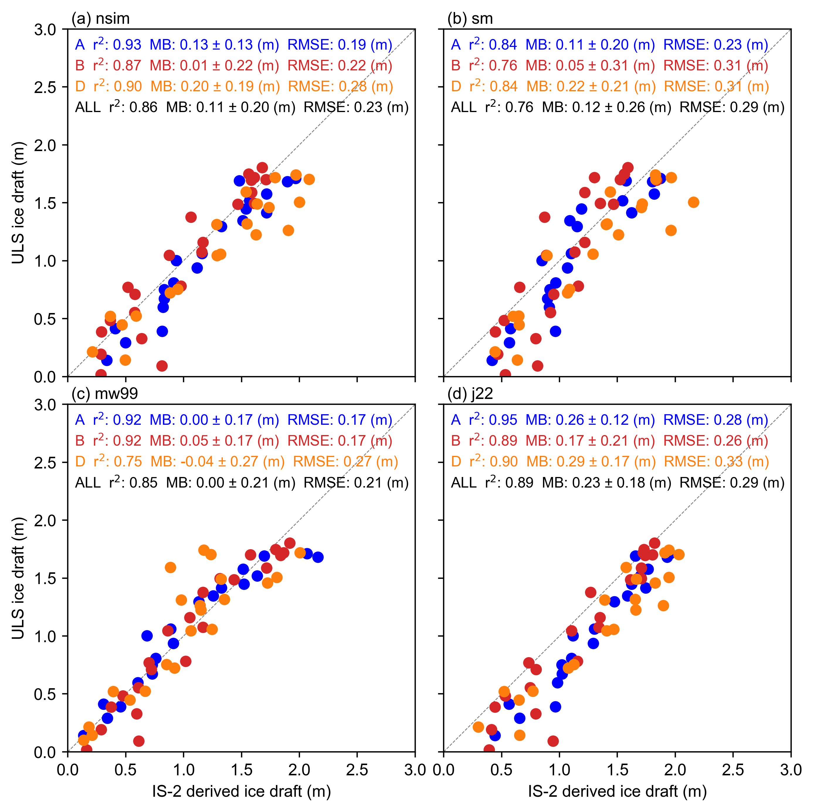

Comparisons with BGEP ULS sea ice draft estimates updated with new data#
Summary: In this notebook, we produce comparisons of the gridded ICESat-2 sea ice thickness data with draft measurements obtained from Upward Looking Sonar moorings deployed in the Beaufort Sea.
Version history: Version 1 (01/01/2022)
Import notebook dependencies#
import xarray as xr
import pandas as pd
import numpy as np
import itertools
import pyproj
from netCDF4 import Dataset
import scipy.interpolate
from utils.read_data_utils import read_book_data, read_IS2SITMOGR4 # Helper function for reading the data from the bucket
from utils.plotting_utils import compute_gridcell_winter_means, interactiveArcticMaps, interactive_winter_mean_maps, interactive_winter_comparison_lineplot # Plotting
from scipy import stats
import datetime
# Plotting dependencies
import cartopy.crs as ccrs
from textwrap import wrap
import hvplot.pandas
import holoviews as hv
import matplotlib.pyplot as plt
from matplotlib.axes import Axes
from cartopy.mpl.geoaxes import GeoAxes
GeoAxes._pcolormesh_patched = Axes.pcolormesh # Helps avoid some weird issues with the polar projection
%config InlineBackend.figure_format = 'retina'
import matplotlib as mpl
mpl.rcParams['figure.dpi'] = 200 # Sets figure size in the notebook
# Remove warnings to improve display
import warnings
warnings.filterwarnings('ignore')
# DO ONE RUN APR 2021 WITH SM AS THIS IS WHEN IT IS AVAILABLE TO
start_date = "Nov 2018"
end_date = "Apr 2021"
options = {
'nsim': {'thickness': 'ice_thickness', 'snow_depth': 'snow_depth'},
'sm': {'thickness': 'ice_thickness_sm', 'snow_depth': 'snow_depth_sm'},
'mw99': {'thickness': 'ice_thickness_mw99', 'snow_depth': 'snow_depth_mw99'},
'j22': {'thickness': 'ice_thickness_j22', 'snow_depth': 'snow_depth'}
}
# DO A FULL RUN UP TO 2023
#start_date = "Nov 2018"
#end_date = "Apr 2023"
#options = {
# 'nsim': {'thickness': 'ice_thickness', 'snow_depth': 'snow_depth'},
# 'nsim_int': {'thickness': 'ice_thickness_int', 'snow_depth': 'snow_depth_int'},
# 'mw99': {'thickness': 'ice_thickness_mw99', 'snow_depth': 'snow_depth_mw99'},
# 'j22': {'thickness': 'ice_thickness_j22', 'snow_depth': 'snow_depth'}}
IS2SITMOGR4_v3 = read_IS2SITMOGR4(data_type='zarr-s3', persist=True)
IS2SITMOGR4_v3
load zarr from S3 bucket
zarr_path: s3://icesat-2-sea-ice-us-west-2/IS2SITMOGR4_V3/IS2SITMOGR4_V3_201811-202404.zarr
<xarray.Dataset>
Dimensions: (time: 46, y: 448, x: 304)
Coordinates:
latitude (y, x) float32 31.1 31.2 ... 34.58 34.47
longitude (y, x) float32 168.3 168.1 ... -10.18 -9.999
* time (time) datetime64[ns] 2018-11-01 ... 2024...
* x (x) float32 -3.838e+06 ... 3.738e+06
* y (y) float32 5.838e+06 ... -5.338e+06
Data variables: (12/27)
crs (time) int32 dask.array<chunksize=(46,), meta=np.ndarray>
freeboard (time, y, x) float32 dask.array<chunksize=(1, 448, 304), meta=np.ndarray>
freeboard_int (time, y, x) float32 dask.array<chunksize=(1, 448, 304), meta=np.ndarray>
ice_density (time, y, x) float32 dask.array<chunksize=(1, 448, 304), meta=np.ndarray>
ice_density_j22 (time, y, x) float32 dask.array<chunksize=(1, 448, 304), meta=np.ndarray>
ice_thickness (time, y, x) float32 dask.array<chunksize=(1, 448, 304), meta=np.ndarray>
... ...
snow_density_sm (time, y, x) float32 dask.array<chunksize=(1, 448, 304), meta=np.ndarray>
snow_density_w99 (time, y, x) float32 dask.array<chunksize=(1, 448, 304), meta=np.ndarray>
snow_depth (time, y, x) float32 dask.array<chunksize=(1, 448, 304), meta=np.ndarray>
snow_depth_int (time, y, x) float32 dask.array<chunksize=(1, 448, 304), meta=np.ndarray>
snow_depth_mw99 (time, y, x) float32 dask.array<chunksize=(1, 448, 304), meta=np.ndarray>
snow_depth_sm (time, y, x) float32 dask.array<chunksize=(1, 448, 304), meta=np.ndarray>
Attributes:
contact: Alek Petty (akpetty@umd.edu)
description: Aggregated IS2SITMOGR4 V3 dataset.
history: Created 28/11/23
reference: Official NSIDC data doi: 10.5067/CV6JEXEE31HF. Derived data...book_ds = read_book_data(CS2=True)
#book_ds = book_ds.rename({'x': 'xgrid', 'y': 'ygrid'})
# Remove the x and y coordinates from the IS2SITMOGR4_v3 dataset
# Add 1D x and y coordinates
book_ds = book_ds.assign_coords(
x=book_ds['xgrid'][0, :], # Assuming xgrid is 2D, take the first row
y=book_ds['ygrid'][:, 0] # Assuming ygrid is 2D, take the first column
)
book_ds = book_ds.drop_vars(['xgrid', 'ygrid'])
book_ds
<xarray.Dataset>
Dimensions: (time: 30, y: 448, x: 304)
Coordinates:
* time (time) datetime64[ns] 2018-11-01 ... 2021-...
longitude (y, x) float32 ...
latitude (y, x) float32 ...
* x (x) float32 -3.838e+06 ... 3.738e+06
* y (y) float32 5.838e+06 ... -5.338e+06
Data variables: (12/25)
projection (time) float64 ...
ice_thickness (time, y, x) float32 ...
ice_thickness_unc (time, y, x) float32 ...
num_segments (time, y, x) float32 ...
mean_day_of_month (time, y, x) float32 ...
snow_depth (time, y, x) float32 ...
... ...
y_vel (time, y, x) float64 ...
cs2_sea_ice_thickness_GSFC (time, y, x) float32 ...
cs2_sea_ice_thickness_CPOM (time, y, x) float32 ...
cs2_sea_ice_thickness_AWISMOS (time, y, x) float64 ...
cs2_sea_ice_thickness_UBRIS (time, y, x) float64 ...
cs2_sea_ice_thickness_KK (time, y, x) float64 ...
Attributes:
contact: Alek Petty (alek.a.petty@nasa.gov)
description: Gridded Oct 2019 Arctic sea ice thickness and ancillary dat...
reference: Data doi: 10.5067/CV6JEXEE31HF. Original methodology descri...
history: Created 21/01/22IS2SITMOGR4_v3 = IS2SITMOGR4_v3.assign(cs2_sea_ice_thickness_UBRIS=book_ds['cs2_sea_ice_thickness_UBRIS'])
IS2SITMOGR4_v3
<xarray.Dataset>
Dimensions: (time: 46, x: 304, y: 448)
Coordinates:
* time (time) datetime64[ns] 2018-11-01 ... 2024...
* x (x) float32 -3.838e+06 ... 3.738e+06
* y (y) float32 5.838e+06 ... -5.338e+06
latitude (y, x) float32 31.1 31.2 ... 34.58 34.47
longitude (y, x) float32 168.3 168.1 ... -10.18 -9.999
Data variables: (12/28)
crs (time) int32 dask.array<chunksize=(46,), meta=np.ndarray>
freeboard (time, y, x) float32 dask.array<chunksize=(1, 448, 304), meta=np.ndarray>
freeboard_int (time, y, x) float32 dask.array<chunksize=(1, 448, 304), meta=np.ndarray>
ice_density (time, y, x) float32 dask.array<chunksize=(1, 448, 304), meta=np.ndarray>
ice_density_j22 (time, y, x) float32 dask.array<chunksize=(1, 448, 304), meta=np.ndarray>
ice_thickness (time, y, x) float32 dask.array<chunksize=(1, 448, 304), meta=np.ndarray>
... ...
snow_density_w99 (time, y, x) float32 dask.array<chunksize=(1, 448, 304), meta=np.ndarray>
snow_depth (time, y, x) float32 dask.array<chunksize=(1, 448, 304), meta=np.ndarray>
snow_depth_int (time, y, x) float32 dask.array<chunksize=(1, 448, 304), meta=np.ndarray>
snow_depth_mw99 (time, y, x) float32 dask.array<chunksize=(1, 448, 304), meta=np.ndarray>
snow_depth_sm (time, y, x) float32 dask.array<chunksize=(1, 448, 304), meta=np.ndarray>
cs2_sea_ice_thickness_UBRIS (time, y, x) float64 0.0 0.0 0.0 ... nan nan
Attributes:
contact: Alek Petty (akpetty@umd.edu)
description: Aggregated IS2SITMOGR4 V3 dataset.
history: Created 28/11/23
reference: Official NSIDC data doi: 10.5067/CV6JEXEE31HF. Derived data...# Issue in how region mask was assigned
IS2SITMOGR4_v3['region_mask'] = IS2SITMOGR4_v3['region_mask'].isel(time=0, drop=True)
# Define the cutoff date
#cutoff_date = pd.Timestamp('2021-08-15')
# Filter the data to include only dates up to the cutoff date to be consistent with SM
#IS2SITMOGR4_v3 = IS2SITMOGR4_v3.where(IS2SITMOGR4_v3['time'] >= cutoff_date, drop=True)
# Estimate ice draft from the ICESat-2 data for more direct comparison with ULS draft measurements
# NB: Another option (not taken) is to simply multiply ULS drafts by 1.1 to convert to thickness (AWI do this)
# Include extra var = '_int' to use interpolated values, not recommended for validation purposes.
# Define the variables for each option
# Calculate ice draft for each option
for option, vars in options.items():
thickness_var = vars['thickness']
snow_depth_var = vars['snow_depth']
IS2SITMOGR4_v3[f'ice_draft_{option}'] = (IS2SITMOGR4_v3[thickness_var] - IS2SITMOGR4_v3['freeboard'] + IS2SITMOGR4_v3[snow_depth_var])
options.keys()
dict_keys(['nsim', 'sm', 'mw99', 'j22'])
# Initialize map projection and project data to it
out_proj = 'EPSG:3411'
out_lons = IS2SITMOGR4_v3.longitude.values
out_lats = IS2SITMOGR4_v3.latitude.values
mapProj = pyproj.Proj("+init=" + out_proj)
xptsIS2, yptsIS2 = mapProj(out_lons, out_lats)
IS2_date_range = pd.date_range(start=start_date, end=end_date, freq='MS') # MS indicates a time frequency of start of the month
IS2_date_range = IS2_date_range[((IS2_date_range.month <5) | (IS2_date_range.month > 8))]
IS2_date_range_strs=[str(date.year)+'-%02d'%(date.month) for date in IS2_date_range]
# This is the value in meters of the aggregation length-scale for the ICESat-2 data
comp_res=50000
# Wrange ULS data
# Could really convert this to another data wrangling notebook and store the derived output as netcdfs
dataPathULS='./data/'
def get_ULS_dates(uls_mean_monthly_draft, uls_dates, date):
#print(date)
a = uls_mean_monthly_draft[uls_dates==date].values[0]
return a
def get_uls_year(letter, year):
if letter=='a':
print('Mooring A (75.0 N, 150 W)')
uls_x, uls_y = mapProj(-150., 75.)
if letter=='b':
print('Mooring B (78.4 N, 150.0 W)')
uls_x, uls_y = mapProj(-150., 78.4)
if letter=='d':
print('Mooring D (74.0 N, 140.0 W)')
uls_x, uls_y = mapProj(-140., 74.)
uls = pd.read_csv(dataPathULS+'uls'+year+letter+'_draft.dat', sep='\s+',names = ['date', 'time', 'draft'], header=2)
utc_datetime_uls = pd.to_datetime(uls['date'], format='%Y%m%d')
uls_mean_daily_draft = uls['draft'].groupby([utc_datetime_uls.dt.date]).mean()
uls_mean_monthly_draft = uls['draft'].groupby([utc_datetime_uls.dt.to_period('m')]).mean()
#print(uls_mean_monthly_draft)
return uls_mean_daily_draft, uls_mean_monthly_draft, uls_x, uls_y
uls_mean_daily_draft_a_18, uls_mean_monthly_draft_a_18, uls_x_a, uls_y_a = get_uls_year('a', '18')
uls_mean_daily_draft_b_18, uls_mean_monthly_draft_b_18, uls_x_b, uls_y_b = get_uls_year('b', '18')
uls_mean_daily_draft_d_18, uls_mean_monthly_draft_d_18, uls_x_d, uls_y_d = get_uls_year('d', '18')
Mooring A (75.0 N, 150 W)
Mooring B (78.4 N, 150.0 W)
Mooring D (74.0 N, 140.0 W)
uls_mean_daily_draft_a_21, uls_mean_monthly_draft_a_21, _, _ = get_uls_year('a', '21')
uls_mean_daily_draft_b_21, uls_mean_monthly_draft_b_21, _, _ = get_uls_year('b', '21')
uls_mean_daily_draft_d_21, uls_mean_monthly_draft_d_21, _, _ = get_uls_year('d', '21')
Mooring A (75.0 N, 150 W)
Mooring B (78.4 N, 150.0 W)
Mooring D (74.0 N, 140.0 W)
uls_mean_daily_draft_a_22, uls_mean_monthly_draft_a_22, _, _ = get_uls_year('a', '22')
uls_mean_daily_draft_b_22, uls_mean_monthly_draft_b_22, _, _ = get_uls_year('b', '22')
uls_mean_daily_draft_d_22, uls_mean_monthly_draft_d_22, _, _ = get_uls_year('d', '22')
Mooring A (75.0 N, 150 W)
Mooring B (78.4 N, 150.0 W)
Mooring D (74.0 N, 140.0 W)
# Combine data for all years
uls_mean_daily_draft_a = pd.concat([uls_mean_daily_draft_a_18, uls_mean_daily_draft_a_21, uls_mean_daily_draft_a_22])
uls_mean_daily_draft_b = pd.concat([uls_mean_daily_draft_b_18, uls_mean_daily_draft_b_21, uls_mean_daily_draft_b_22])
uls_mean_daily_draft_d = pd.concat([uls_mean_daily_draft_d_18, uls_mean_daily_draft_d_21, uls_mean_daily_draft_d_22])
# Combine data for all years
uls_mean_monthly_draft_a = pd.concat([uls_mean_monthly_draft_a_18, uls_mean_monthly_draft_a_21, uls_mean_monthly_draft_a_22])
uls_mean_monthly_draft_b = pd.concat([uls_mean_monthly_draft_b_18, uls_mean_monthly_draft_b_21, uls_mean_monthly_draft_b_22])
uls_mean_monthly_draft_d = pd.concat([uls_mean_monthly_draft_d_18, uls_mean_monthly_draft_d_21, uls_mean_monthly_draft_d_22])
def grid_IS2_nearby(date, option, uls_x, uls_y, res=50000):
#print(date)
IS2 = IS2SITMOGR4_v3['ice_draft_'+option].sel(time=date)
xptsIS2g, yptsIS2g = mapProj(IS2.longitude.values, IS2.latitude.values)
dist = np.sqrt( (xptsIS2 - uls_x)**2 + (yptsIS2 - uls_y)**2 )
IS2_uls = IS2.where(dist<res).mean()
#print('Number of valid IS-2 grid cells in month '+str(date)[0:7]+':', np.count_nonzero(~np.isnan(IS2.where(dist<res))))
#Another option I first explored, coarsen the data then do nearest neighbor...provided similar results but above is more flexible.
#if coarse_res>1:
#Coarsen array by coarse_res in x/y directions (note that each grid-cell represents 25 km so 4 = 100 km)
# IS2 = IS2.coarsen(x=res, y=res, boundary='pad').mean()
#IS2_uls = scipy.interpolate.griddata((xptsIS2g.flatten(), yptsIS2g.flatten()), IS2.values.flatten(), (uls_x, uls_y), method = 'nearest')
return IS2_uls
# Compute monthly ULS values for each option
monthly_IS2_at_ULS_a_options = {}
monthly_IS2_at_ULS_b_options = {}
monthly_IS2_at_ULS_d_options = {}
monthly_IS2_at_ULS_all_options = {}
for option in options.keys():
monthly_IS2_at_ULS_a_options[option] = [
grid_IS2_nearby(date, option, uls_x_a, uls_y_a, res=comp_res) for date in IS2_date_range
]
monthly_IS2_at_ULS_b_options[option] = [
grid_IS2_nearby(date, option,uls_x_b, uls_y_b, res=comp_res) for date in IS2_date_range
]
monthly_IS2_at_ULS_d_options[option] = [
grid_IS2_nearby(date, option,uls_x_d, uls_y_d, res=comp_res) for date in IS2_date_range
]
# Combine all ULS values for the current option
monthly_IS2_at_ULS_all_options[option] = (
monthly_IS2_at_ULS_a_options[option] +
monthly_IS2_at_ULS_b_options[option] +
monthly_IS2_at_ULS_d_options[option]
)
monthly_IS2_at_ULS_all_options[option]
[<xarray.DataArray 'ice_draft_j22' ()>
dask.array<mean_agg-aggregate, shape=(), dtype=float32, chunksize=(), chunktype=numpy.ndarray>
Coordinates:
time datetime64[ns] 2018-11-01,
<xarray.DataArray 'ice_draft_j22' ()>
dask.array<mean_agg-aggregate, shape=(), dtype=float32, chunksize=(), chunktype=numpy.ndarray>
Coordinates:
time datetime64[ns] 2018-12-01,
<xarray.DataArray 'ice_draft_j22' ()>
dask.array<mean_agg-aggregate, shape=(), dtype=float32, chunksize=(), chunktype=numpy.ndarray>
Coordinates:
time datetime64[ns] 2019-01-01,
<xarray.DataArray 'ice_draft_j22' ()>
dask.array<mean_agg-aggregate, shape=(), dtype=float32, chunksize=(), chunktype=numpy.ndarray>
Coordinates:
time datetime64[ns] 2019-02-01,
<xarray.DataArray 'ice_draft_j22' ()>
dask.array<mean_agg-aggregate, shape=(), dtype=float32, chunksize=(), chunktype=numpy.ndarray>
Coordinates:
time datetime64[ns] 2019-03-01,
<xarray.DataArray 'ice_draft_j22' ()>
dask.array<mean_agg-aggregate, shape=(), dtype=float32, chunksize=(), chunktype=numpy.ndarray>
Coordinates:
time datetime64[ns] 2019-04-01,
<xarray.DataArray 'ice_draft_j22' ()>
dask.array<mean_agg-aggregate, shape=(), dtype=float32, chunksize=(), chunktype=numpy.ndarray>
Coordinates:
time datetime64[ns] 2019-09-01,
<xarray.DataArray 'ice_draft_j22' ()>
dask.array<mean_agg-aggregate, shape=(), dtype=float32, chunksize=(), chunktype=numpy.ndarray>
Coordinates:
time datetime64[ns] 2019-10-01,
<xarray.DataArray 'ice_draft_j22' ()>
dask.array<mean_agg-aggregate, shape=(), dtype=float32, chunksize=(), chunktype=numpy.ndarray>
Coordinates:
time datetime64[ns] 2019-11-01,
<xarray.DataArray 'ice_draft_j22' ()>
dask.array<mean_agg-aggregate, shape=(), dtype=float32, chunksize=(), chunktype=numpy.ndarray>
Coordinates:
time datetime64[ns] 2019-12-01,
<xarray.DataArray 'ice_draft_j22' ()>
dask.array<mean_agg-aggregate, shape=(), dtype=float32, chunksize=(), chunktype=numpy.ndarray>
Coordinates:
time datetime64[ns] 2020-01-01,
<xarray.DataArray 'ice_draft_j22' ()>
dask.array<mean_agg-aggregate, shape=(), dtype=float32, chunksize=(), chunktype=numpy.ndarray>
Coordinates:
time datetime64[ns] 2020-02-01,
<xarray.DataArray 'ice_draft_j22' ()>
dask.array<mean_agg-aggregate, shape=(), dtype=float32, chunksize=(), chunktype=numpy.ndarray>
Coordinates:
time datetime64[ns] 2020-03-01,
<xarray.DataArray 'ice_draft_j22' ()>
dask.array<mean_agg-aggregate, shape=(), dtype=float32, chunksize=(), chunktype=numpy.ndarray>
Coordinates:
time datetime64[ns] 2020-04-01,
<xarray.DataArray 'ice_draft_j22' ()>
dask.array<mean_agg-aggregate, shape=(), dtype=float32, chunksize=(), chunktype=numpy.ndarray>
Coordinates:
time datetime64[ns] 2020-09-01,
<xarray.DataArray 'ice_draft_j22' ()>
dask.array<mean_agg-aggregate, shape=(), dtype=float32, chunksize=(), chunktype=numpy.ndarray>
Coordinates:
time datetime64[ns] 2020-10-01,
<xarray.DataArray 'ice_draft_j22' ()>
dask.array<mean_agg-aggregate, shape=(), dtype=float32, chunksize=(), chunktype=numpy.ndarray>
Coordinates:
time datetime64[ns] 2020-11-01,
<xarray.DataArray 'ice_draft_j22' ()>
dask.array<mean_agg-aggregate, shape=(), dtype=float32, chunksize=(), chunktype=numpy.ndarray>
Coordinates:
time datetime64[ns] 2020-12-01,
<xarray.DataArray 'ice_draft_j22' ()>
dask.array<mean_agg-aggregate, shape=(), dtype=float32, chunksize=(), chunktype=numpy.ndarray>
Coordinates:
time datetime64[ns] 2021-01-01,
<xarray.DataArray 'ice_draft_j22' ()>
dask.array<mean_agg-aggregate, shape=(), dtype=float32, chunksize=(), chunktype=numpy.ndarray>
Coordinates:
time datetime64[ns] 2021-02-01,
<xarray.DataArray 'ice_draft_j22' ()>
dask.array<mean_agg-aggregate, shape=(), dtype=float32, chunksize=(), chunktype=numpy.ndarray>
Coordinates:
time datetime64[ns] 2021-03-01,
<xarray.DataArray 'ice_draft_j22' ()>
dask.array<mean_agg-aggregate, shape=(), dtype=float32, chunksize=(), chunktype=numpy.ndarray>
Coordinates:
time datetime64[ns] 2021-04-01,
<xarray.DataArray 'ice_draft_j22' ()>
dask.array<mean_agg-aggregate, shape=(), dtype=float32, chunksize=(), chunktype=numpy.ndarray>
Coordinates:
time datetime64[ns] 2018-11-01,
<xarray.DataArray 'ice_draft_j22' ()>
dask.array<mean_agg-aggregate, shape=(), dtype=float32, chunksize=(), chunktype=numpy.ndarray>
Coordinates:
time datetime64[ns] 2018-12-01,
<xarray.DataArray 'ice_draft_j22' ()>
dask.array<mean_agg-aggregate, shape=(), dtype=float32, chunksize=(), chunktype=numpy.ndarray>
Coordinates:
time datetime64[ns] 2019-01-01,
<xarray.DataArray 'ice_draft_j22' ()>
dask.array<mean_agg-aggregate, shape=(), dtype=float32, chunksize=(), chunktype=numpy.ndarray>
Coordinates:
time datetime64[ns] 2019-02-01,
<xarray.DataArray 'ice_draft_j22' ()>
dask.array<mean_agg-aggregate, shape=(), dtype=float32, chunksize=(), chunktype=numpy.ndarray>
Coordinates:
time datetime64[ns] 2019-03-01,
<xarray.DataArray 'ice_draft_j22' ()>
dask.array<mean_agg-aggregate, shape=(), dtype=float32, chunksize=(), chunktype=numpy.ndarray>
Coordinates:
time datetime64[ns] 2019-04-01,
<xarray.DataArray 'ice_draft_j22' ()>
dask.array<mean_agg-aggregate, shape=(), dtype=float32, chunksize=(), chunktype=numpy.ndarray>
Coordinates:
time datetime64[ns] 2019-09-01,
<xarray.DataArray 'ice_draft_j22' ()>
dask.array<mean_agg-aggregate, shape=(), dtype=float32, chunksize=(), chunktype=numpy.ndarray>
Coordinates:
time datetime64[ns] 2019-10-01,
<xarray.DataArray 'ice_draft_j22' ()>
dask.array<mean_agg-aggregate, shape=(), dtype=float32, chunksize=(), chunktype=numpy.ndarray>
Coordinates:
time datetime64[ns] 2019-11-01,
<xarray.DataArray 'ice_draft_j22' ()>
dask.array<mean_agg-aggregate, shape=(), dtype=float32, chunksize=(), chunktype=numpy.ndarray>
Coordinates:
time datetime64[ns] 2019-12-01,
<xarray.DataArray 'ice_draft_j22' ()>
dask.array<mean_agg-aggregate, shape=(), dtype=float32, chunksize=(), chunktype=numpy.ndarray>
Coordinates:
time datetime64[ns] 2020-01-01,
<xarray.DataArray 'ice_draft_j22' ()>
dask.array<mean_agg-aggregate, shape=(), dtype=float32, chunksize=(), chunktype=numpy.ndarray>
Coordinates:
time datetime64[ns] 2020-02-01,
<xarray.DataArray 'ice_draft_j22' ()>
dask.array<mean_agg-aggregate, shape=(), dtype=float32, chunksize=(), chunktype=numpy.ndarray>
Coordinates:
time datetime64[ns] 2020-03-01,
<xarray.DataArray 'ice_draft_j22' ()>
dask.array<mean_agg-aggregate, shape=(), dtype=float32, chunksize=(), chunktype=numpy.ndarray>
Coordinates:
time datetime64[ns] 2020-04-01,
<xarray.DataArray 'ice_draft_j22' ()>
dask.array<mean_agg-aggregate, shape=(), dtype=float32, chunksize=(), chunktype=numpy.ndarray>
Coordinates:
time datetime64[ns] 2020-09-01,
<xarray.DataArray 'ice_draft_j22' ()>
dask.array<mean_agg-aggregate, shape=(), dtype=float32, chunksize=(), chunktype=numpy.ndarray>
Coordinates:
time datetime64[ns] 2020-10-01,
<xarray.DataArray 'ice_draft_j22' ()>
dask.array<mean_agg-aggregate, shape=(), dtype=float32, chunksize=(), chunktype=numpy.ndarray>
Coordinates:
time datetime64[ns] 2020-11-01,
<xarray.DataArray 'ice_draft_j22' ()>
dask.array<mean_agg-aggregate, shape=(), dtype=float32, chunksize=(), chunktype=numpy.ndarray>
Coordinates:
time datetime64[ns] 2020-12-01,
<xarray.DataArray 'ice_draft_j22' ()>
dask.array<mean_agg-aggregate, shape=(), dtype=float32, chunksize=(), chunktype=numpy.ndarray>
Coordinates:
time datetime64[ns] 2021-01-01,
<xarray.DataArray 'ice_draft_j22' ()>
dask.array<mean_agg-aggregate, shape=(), dtype=float32, chunksize=(), chunktype=numpy.ndarray>
Coordinates:
time datetime64[ns] 2021-02-01,
<xarray.DataArray 'ice_draft_j22' ()>
dask.array<mean_agg-aggregate, shape=(), dtype=float32, chunksize=(), chunktype=numpy.ndarray>
Coordinates:
time datetime64[ns] 2021-03-01,
<xarray.DataArray 'ice_draft_j22' ()>
dask.array<mean_agg-aggregate, shape=(), dtype=float32, chunksize=(), chunktype=numpy.ndarray>
Coordinates:
time datetime64[ns] 2021-04-01,
<xarray.DataArray 'ice_draft_j22' ()>
dask.array<mean_agg-aggregate, shape=(), dtype=float32, chunksize=(), chunktype=numpy.ndarray>
Coordinates:
time datetime64[ns] 2018-11-01,
<xarray.DataArray 'ice_draft_j22' ()>
dask.array<mean_agg-aggregate, shape=(), dtype=float32, chunksize=(), chunktype=numpy.ndarray>
Coordinates:
time datetime64[ns] 2018-12-01,
<xarray.DataArray 'ice_draft_j22' ()>
dask.array<mean_agg-aggregate, shape=(), dtype=float32, chunksize=(), chunktype=numpy.ndarray>
Coordinates:
time datetime64[ns] 2019-01-01,
<xarray.DataArray 'ice_draft_j22' ()>
dask.array<mean_agg-aggregate, shape=(), dtype=float32, chunksize=(), chunktype=numpy.ndarray>
Coordinates:
time datetime64[ns] 2019-02-01,
<xarray.DataArray 'ice_draft_j22' ()>
dask.array<mean_agg-aggregate, shape=(), dtype=float32, chunksize=(), chunktype=numpy.ndarray>
Coordinates:
time datetime64[ns] 2019-03-01,
<xarray.DataArray 'ice_draft_j22' ()>
dask.array<mean_agg-aggregate, shape=(), dtype=float32, chunksize=(), chunktype=numpy.ndarray>
Coordinates:
time datetime64[ns] 2019-04-01,
<xarray.DataArray 'ice_draft_j22' ()>
dask.array<mean_agg-aggregate, shape=(), dtype=float32, chunksize=(), chunktype=numpy.ndarray>
Coordinates:
time datetime64[ns] 2019-09-01,
<xarray.DataArray 'ice_draft_j22' ()>
dask.array<mean_agg-aggregate, shape=(), dtype=float32, chunksize=(), chunktype=numpy.ndarray>
Coordinates:
time datetime64[ns] 2019-10-01,
<xarray.DataArray 'ice_draft_j22' ()>
dask.array<mean_agg-aggregate, shape=(), dtype=float32, chunksize=(), chunktype=numpy.ndarray>
Coordinates:
time datetime64[ns] 2019-11-01,
<xarray.DataArray 'ice_draft_j22' ()>
dask.array<mean_agg-aggregate, shape=(), dtype=float32, chunksize=(), chunktype=numpy.ndarray>
Coordinates:
time datetime64[ns] 2019-12-01,
<xarray.DataArray 'ice_draft_j22' ()>
dask.array<mean_agg-aggregate, shape=(), dtype=float32, chunksize=(), chunktype=numpy.ndarray>
Coordinates:
time datetime64[ns] 2020-01-01,
<xarray.DataArray 'ice_draft_j22' ()>
dask.array<mean_agg-aggregate, shape=(), dtype=float32, chunksize=(), chunktype=numpy.ndarray>
Coordinates:
time datetime64[ns] 2020-02-01,
<xarray.DataArray 'ice_draft_j22' ()>
dask.array<mean_agg-aggregate, shape=(), dtype=float32, chunksize=(), chunktype=numpy.ndarray>
Coordinates:
time datetime64[ns] 2020-03-01,
<xarray.DataArray 'ice_draft_j22' ()>
dask.array<mean_agg-aggregate, shape=(), dtype=float32, chunksize=(), chunktype=numpy.ndarray>
Coordinates:
time datetime64[ns] 2020-04-01,
<xarray.DataArray 'ice_draft_j22' ()>
dask.array<mean_agg-aggregate, shape=(), dtype=float32, chunksize=(), chunktype=numpy.ndarray>
Coordinates:
time datetime64[ns] 2020-09-01,
<xarray.DataArray 'ice_draft_j22' ()>
dask.array<mean_agg-aggregate, shape=(), dtype=float32, chunksize=(), chunktype=numpy.ndarray>
Coordinates:
time datetime64[ns] 2020-10-01,
<xarray.DataArray 'ice_draft_j22' ()>
dask.array<mean_agg-aggregate, shape=(), dtype=float32, chunksize=(), chunktype=numpy.ndarray>
Coordinates:
time datetime64[ns] 2020-11-01,
<xarray.DataArray 'ice_draft_j22' ()>
dask.array<mean_agg-aggregate, shape=(), dtype=float32, chunksize=(), chunktype=numpy.ndarray>
Coordinates:
time datetime64[ns] 2020-12-01,
<xarray.DataArray 'ice_draft_j22' ()>
dask.array<mean_agg-aggregate, shape=(), dtype=float32, chunksize=(), chunktype=numpy.ndarray>
Coordinates:
time datetime64[ns] 2021-01-01,
<xarray.DataArray 'ice_draft_j22' ()>
dask.array<mean_agg-aggregate, shape=(), dtype=float32, chunksize=(), chunktype=numpy.ndarray>
Coordinates:
time datetime64[ns] 2021-02-01,
<xarray.DataArray 'ice_draft_j22' ()>
dask.array<mean_agg-aggregate, shape=(), dtype=float32, chunksize=(), chunktype=numpy.ndarray>
Coordinates:
time datetime64[ns] 2021-03-01,
<xarray.DataArray 'ice_draft_j22' ()>
dask.array<mean_agg-aggregate, shape=(), dtype=float32, chunksize=(), chunktype=numpy.ndarray>
Coordinates:
time datetime64[ns] 2021-04-01]
uls_dates=uls_mean_monthly_draft_a.index.astype(str)
uls_mean_monthly_draft_a_IS2_period = [get_ULS_dates(uls_mean_monthly_draft_a, uls_dates, date) for date in IS2_date_range_strs]
uls_dates=uls_mean_monthly_draft_b.index.astype(str)
uls_mean_monthly_draft_b_IS2_period = [get_ULS_dates(uls_mean_monthly_draft_b, uls_dates, date) for date in IS2_date_range_strs]
uls_dates=uls_mean_monthly_draft_d.index.astype(str)
uls_mean_monthly_draft_d_IS2_period = [get_ULS_dates(uls_mean_monthly_draft_d, uls_dates, date) for date in IS2_date_range_strs]
uls_mean_monthly_draft_IS2_period = uls_mean_monthly_draft_a_IS2_period+uls_mean_monthly_draft_b_IS2_period+uls_mean_monthly_draft_d_IS2_period
# Validation analysis for each option
validation_results = {}
for option in options.keys():
# ULS A
mask_a = ~np.isnan(monthly_IS2_at_ULS_a_options[option])
res_a = stats.linregress(
np.array(monthly_IS2_at_ULS_a_options[option])[mask_a],
np.array(uls_mean_monthly_draft_a_IS2_period)[mask_a]
)
r_str_a = '%.02f' % (res_a[2]**2)
mb_str_a = '%.02f' % (np.nanmean(np.array(monthly_IS2_at_ULS_a_options[option]) - np.array(uls_mean_monthly_draft_a_IS2_period)))
sd_str_a = '%.02f' % (np.nanstd(np.array(monthly_IS2_at_ULS_a_options[option]) - np.array(uls_mean_monthly_draft_a_IS2_period)))
# ULS B
mask_b = ~np.isnan(monthly_IS2_at_ULS_b_options[option])
res_b = stats.linregress(
np.array(monthly_IS2_at_ULS_b_options[option])[mask_b],
np.array(uls_mean_monthly_draft_b_IS2_period)[mask_b]
)
r_str_b = '%.02f' % (res_b[2]**2)
mb_str_b = '%.02f' % (np.nanmean(np.array(monthly_IS2_at_ULS_b_options[option]) - np.array(uls_mean_monthly_draft_b_IS2_period)))
sd_str_b = '%.02f' % (np.nanstd(np.array(monthly_IS2_at_ULS_b_options[option]) - np.array(uls_mean_monthly_draft_b_IS2_period)))
# ULS D
mask_d = ~np.isnan(monthly_IS2_at_ULS_d_options[option])
res_d = stats.linregress(
np.array(monthly_IS2_at_ULS_d_options[option])[mask_d],
np.array(uls_mean_monthly_draft_d_IS2_period)[mask_d]
)
r_str_d = '%.02f' % (res_d[2]**2)
mb_str_d = '%.02f' % (np.nanmean(np.array(monthly_IS2_at_ULS_d_options[option]) - np.array(uls_mean_monthly_draft_d_IS2_period)))
sd_str_d = '%.02f' % (np.nanstd(np.array(monthly_IS2_at_ULS_d_options[option]) - np.array(uls_mean_monthly_draft_d_IS2_period)))
# ULS ALL
mask_all = ~np.isnan(monthly_IS2_at_ULS_all_options[option])
res_all = stats.linregress(
np.array(monthly_IS2_at_ULS_all_options[option])[mask_all],
np.array(uls_mean_monthly_draft_IS2_period)[mask_all]
)
r_str_all = '%.02f' % (res_all[2]**2)
mb_str_all = '%.02f' % (np.nanmean(np.array(monthly_IS2_at_ULS_all_options[option]) - np.array(uls_mean_monthly_draft_IS2_period)))
sd_str_all = '%.02f' % (np.nanstd(np.array(monthly_IS2_at_ULS_all_options[option]) - np.array(uls_mean_monthly_draft_IS2_period)))
# Store results
validation_results[option] = {
'r_str_a': r_str_a, 'mb_str_a': mb_str_a, 'sd_str_a': sd_str_a,
'r_str_b': r_str_b, 'mb_str_b': mb_str_b, 'sd_str_b': sd_str_b,
'r_str_d': r_str_d, 'mb_str_d': mb_str_d, 'sd_str_d': sd_str_d,
'r_str_all': r_str_all, 'mb_str_all': mb_str_all, 'sd_str_all': sd_str_all
}
validation_results
{'nsim': {'r_str_a': '0.93',
'mb_str_a': '0.13',
'sd_str_a': '0.13',
'r_str_b': '0.87',
'mb_str_b': '0.01',
'sd_str_b': '0.22',
'r_str_d': '0.90',
'mb_str_d': '0.20',
'sd_str_d': '0.19',
'r_str_all': '0.86',
'mb_str_all': '0.11',
'sd_str_all': '0.20'},
'sm': {'r_str_a': '0.84',
'mb_str_a': '0.11',
'sd_str_a': '0.20',
'r_str_b': '0.76',
'mb_str_b': '0.05',
'sd_str_b': '0.31',
'r_str_d': '0.84',
'mb_str_d': '0.22',
'sd_str_d': '0.21',
'r_str_all': '0.76',
'mb_str_all': '0.12',
'sd_str_all': '0.26'},
'mw99': {'r_str_a': '0.92',
'mb_str_a': '0.00',
'sd_str_a': '0.17',
'r_str_b': '0.92',
'mb_str_b': '0.05',
'sd_str_b': '0.17',
'r_str_d': '0.75',
'mb_str_d': '-0.04',
'sd_str_d': '0.27',
'r_str_all': '0.85',
'mb_str_all': '0.00',
'sd_str_all': '0.21'},
'j22': {'r_str_a': '0.95',
'mb_str_a': '0.26',
'sd_str_a': '0.12',
'r_str_b': '0.89',
'mb_str_b': '0.17',
'sd_str_b': '0.21',
'r_str_d': '0.90',
'mb_str_d': '0.29',
'sd_str_d': '0.17',
'r_str_all': '0.89',
'mb_str_all': '0.23',
'sd_str_all': '0.18'}}
import panel as pn
pn.extension()
# Define a function to create plots for a given option
def create_comb_plot(option):
# Daily
uls_a_daily_lineplot_p = uls_mean_daily_draft_a.hvplot.line(grid=True, label="daily ULS", line_dash='solid', color='gray', frame_width=700, frame_height=200).opts(title='ULS A', xaxis=None, ylabel="Ice draft (meters)")
uls_b_daily_lineplot_p = uls_mean_daily_draft_b.hvplot.line(grid=True, line_dash='solid', color='gray', frame_width=700, frame_height=200).opts(title='ULS B', xaxis=None, ylabel="Ice draft (meters)")
uls_d_daily_lineplot_p = uls_mean_daily_draft_d.hvplot.line(grid=True, line_dash='solid', color='gray', frame_width=700, frame_height=200).opts(title='ULS D', ylabel="Ice draft (meters)")
# Monthly
ULS_date_range_a = uls_mean_monthly_draft_a.index.to_timestamp() + pd.Timedelta(days=14)
uls_mean_monthly_draft_a_reindex = pd.Series(data=uls_mean_monthly_draft_a.values, index=ULS_date_range_a)
uls_a_monthly_lineplot_p = uls_mean_monthly_draft_a_reindex.hvplot.line(grid=True, label="monthly ULS", line_dash='dashed', color='k', frame_width=700, frame_height=200).opts(ylabel="Ice draft (meters)")
ULS_date_range_b = uls_mean_monthly_draft_b.index.to_timestamp() + pd.Timedelta(days=14)
uls_mean_monthly_draft_b_reindex = pd.Series(data=uls_mean_monthly_draft_b.values, index=ULS_date_range_b)
uls_b_monthly_lineplot_p = uls_mean_monthly_draft_b_reindex.hvplot.line(grid=True, line_dash='dashed', color='k', frame_width=700, frame_height=200).opts(ylabel="Ice draft (meters)")
ULS_date_range_d = uls_mean_monthly_draft_d.index.to_timestamp() + pd.Timedelta(days=14)
uls_mean_monthly_draft_d_reindex = pd.Series(data=uls_mean_monthly_draft_d.values, index=ULS_date_range_d)
uls_d_monthly_lineplot_p = uls_mean_monthly_draft_d_reindex.hvplot.line(grid=True, line_dash='dashed', color='k', frame_width=700, frame_height=200).opts(ylabel="Ice draft (meters)")
text_a = hv.Text(ULS_date_range_a[-10], 5.2, f'r2: {validation_results[option]["r_str_a"]} {validation_results[option]["mb_str_a"]} +/- {validation_results[option]["sd_str_a"]} (m)')
text_b = hv.Text(ULS_date_range_a[-10], 5.2, f'r2: {validation_results[option]["r_str_b"]} {validation_results[option]["mb_str_b"]} +/- {validation_results[option]["sd_str_b"]} (m)')
text_d = hv.Text(ULS_date_range_a[-10], 5.2, f'r2: {validation_results[option]["r_str_d"]} {validation_results[option]["mb_str_d"]} +/- {validation_results[option]["sd_str_d"]} (m)')
# ICESat-2
is2_uls_mean_monthly_draft_a = pd.Series(data=monthly_IS2_at_ULS_a_options[option], index=IS2_date_range)
is2_uls_a_monthly_lineplot_p = is2_uls_mean_monthly_draft_a.hvplot.scatter(grid=True, label="IS2SITMOGR4v3", marker='x', s=100, color='m', frame_width=700, frame_height=200)
is2_uls_mean_monthly_draft_b = pd.Series(data=monthly_IS2_at_ULS_b_options[option], index=IS2_date_range)
is2_uls_b_monthly_lineplot_p = is2_uls_mean_monthly_draft_b.hvplot.scatter(grid=True, marker='x', s=100, color='m', frame_width=700, frame_height=200)
is2_uls_mean_monthly_draft_d = pd.Series(data=monthly_IS2_at_ULS_d_options[option], index=IS2_date_range)
is2_uls_d_monthly_lineplot_p = is2_uls_mean_monthly_draft_d.hvplot.scatter(grid=True, marker='x', s=100, color='m', frame_width=700, frame_height=200)
# Combine plots and display
comb_plot = ((uls_a_daily_lineplot_p * uls_a_monthly_lineplot_p * is2_uls_a_monthly_lineplot_p * text_a).opts(legend_position='top_left', legend_cols=3)
+ (uls_b_daily_lineplot_p * uls_b_monthly_lineplot_p * is2_uls_b_monthly_lineplot_p * text_b).opts(show_legend=False)
+ (uls_d_daily_lineplot_p * uls_d_monthly_lineplot_p * is2_uls_d_monthly_lineplot_p * text_d).opts(show_legend=False)).cols(1)
return comb_plot
# Create a dropdown widget to select the option
option_selector = pn.widgets.Select(name='Option', options=list(options.keys()))
# Create a panel to display the plot based on the selected option
interactive_plot = pn.bind(create_comb_plot, option=option_selector)
# Layout the widget and the plot
layout = pn.Column(option_selector, interactive_plot)
# Display the layout in the notebook
pn.serve(layout, show=False)
Launching server at http://localhost:51423
<panel.io.server.Server at 0x39dd94a00>
# ... existing code ...
# Validation plot with subplots for each option
plt.rc('font', **{'family': 'sans-serif', 'sans-serif': ['Arial']})
fig, axes = plt.subplots(2, 2, figsize=(8, 8), gridspec_kw={'hspace': 0.08, 'wspace': 0.07}) # Adjust hspace and wspace for less whitespace
axes = axes.flatten() # Flatten the 2D array of axes for easy iteration
panel_labels = ['(a)', '(b)', '(c)', '(d)'] # Panel labels
for i, option in enumerate(options.keys()):
ax = axes[i]
ax.scatter(monthly_IS2_at_ULS_a_options[option], uls_mean_monthly_draft_a_IS2_period, color='b', label='A')
ax.scatter(monthly_IS2_at_ULS_b_options[option], uls_mean_monthly_draft_b_IS2_period, color='tab:red', label='B')
ax.scatter(monthly_IS2_at_ULS_d_options[option], uls_mean_monthly_draft_d_IS2_period, color='tab:orange', label='D')
# Retrieve validation results for the current option
r_str_a = validation_results[option]['r_str_a']
mb_str_a = validation_results[option]['mb_str_a']
sd_str_a = validation_results[option]['sd_str_a']
r_str_b = validation_results[option]['r_str_b']
mb_str_b = validation_results[option]['mb_str_b']
sd_str_b = validation_results[option]['sd_str_b']
r_str_d = validation_results[option]['r_str_d']
mb_str_d = validation_results[option]['mb_str_d']
sd_str_d = validation_results[option]['sd_str_d']
r_str_all = validation_results[option]['r_str_all']
mb_str_all = validation_results[option]['mb_str_all']
sd_str_all = validation_results[option]['sd_str_all']
# Calculate RMSE for each ULS
rmse_a = np.sqrt(np.nanmean((np.array(monthly_IS2_at_ULS_a_options[option]) - np.array(uls_mean_monthly_draft_a_IS2_period))**2))
rmse_b = np.sqrt(np.nanmean((np.array(monthly_IS2_at_ULS_b_options[option]) - np.array(uls_mean_monthly_draft_b_IS2_period))**2))
rmse_d = np.sqrt(np.nanmean((np.array(monthly_IS2_at_ULS_d_options[option]) - np.array(uls_mean_monthly_draft_d_IS2_period))**2))
rmse_all = np.sqrt(np.nanmean((np.array(monthly_IS2_at_ULS_all_options[option]) - np.array(uls_mean_monthly_draft_IS2_period))**2))
# Annotate the plot with RMSE, mean bias, and standard deviation
ax.annotate(f"A r$^2$: {r_str_a} MB: {mb_str_a} ± {sd_str_a} (m) RMSE: {rmse_a:.02f} (m)", color='b', xy=(0.02, 0.98), xycoords='axes fraction', horizontalalignment='left', verticalalignment='top', fontsize=9)
ax.annotate(f"B r$^2$: {r_str_b} MB: {mb_str_b} ± {sd_str_b} (m) RMSE: {rmse_b:.02f} (m)", color='tab:red', xy=(0.02, 0.92), xycoords='axes fraction', horizontalalignment='left', verticalalignment='top', fontsize=9)
ax.annotate(f"D r$^2$: {r_str_d} MB: {mb_str_d} ± {sd_str_d} (m) RMSE: {rmse_d:.02f} (m)", color='tab:orange', xy=(0.02, 0.86), xycoords='axes fraction', horizontalalignment='left', verticalalignment='top', fontsize=9)
ax.annotate(f"ALL r$^2$: {r_str_all} MB: {mb_str_all} ± {sd_str_all} (m) RMSE: {rmse_all:.02f} (m)", color='k', xy=(0.02, 0.80), xycoords='axes fraction', horizontalalignment='left', verticalalignment='top', fontsize=9)
# Combine panel label with option label
ax.annotate(f"{panel_labels[i]} "+option, xy=(0.01, 1.05), xycoords='axes fraction', horizontalalignment='left', verticalalignment='top')
# Set x and y labels only for the leftmost and bottom plots
if i % 2 == 0:
ax.set_ylabel('ULS ice draft (m)')
else:
ax.set_yticklabels('')
if i >= 2:
ax.set_xlabel('IS-2 derived ice draft (m)')
else:
ax.set_xlabel('')
ax.set_xticklabels('')
ax.set_xlim([0, 3])
ax.set_ylim([0, 3])
lims = [
np.min([ax.get_xlim(), ax.get_ylim()]), # min of both axes
np.max([ax.get_xlim(), ax.get_ylim()]), # max of both axes
]
ax.plot(lims, lims, 'k--', linewidth=0.5, alpha=0.5, zorder=0)
ax.set_aspect('equal')
ax.set_xlim(lims)
ax.set_ylim(lims)
#ax.legend()
plt.tight_layout()
plt.savefig('./figs/BGEP_scatter_res'+str(comp_res)+'_nn_'+start_date+end_date+'_subplots_4.pdf', dpi=200)
plt.show()
# ... existing code ...
